Headunit
Headunit
Headunit
As headunits, control units from different system suppliers can be used. Primarily, this constitutes:
- High-Variant Car Information Computer (CIC)
- Basic Variant Car Information Computer (CIC)
- 2nd generation Central Headunit and Multimedia Platform (CHAMP)
- Head unit basic version (HU-B)
The basic version of the CIC, the 2nd generation CHAMP and the basic head unit are identical in function.
The differences compared to the High Version of the CIC are:
- No entertainment server
- Navigation system with fewer functions or no navigation system
- No hard disk, so with memory card
The following section describes the High Version of the Car Information Computer (CIC).
The Car Information Computer is the headunit in the MOST network.
The essential new features for the CIC are:
- Extended functions for existing systems, e.g. navigation (see also Owner's Handbook)
- Additional functions, e.g. central database for address data
- Additional hardware, e.g. hard disk (80 GB) or USB port
- Changed hardware e.g.:
- LVDS data line to the Central Information Display (CID) as two-wire connection
- 1 Drive for DVD and CD
- Operating unit for audio, including favorite buttons, one unit with operating unit for IHKA
- Changed display and operating concept for control centre via:
- New layout of the user interface on the CID
- New controller with 7 fixed selector buttons
- Reduction of the virtual control units in the CIC
Changes to the software and hardware have made it necessary to extend the diagnosis for the Car Information Computer accordingly.
Brief component description
The following components are described:
- Car Information Computer
- Central Information Display with LVDS interface
- Controller
- Rear controller with Rear Seat Entertainment
- USB connection
Car Information Computer
The Car Information Computer (CIC) has 8 free programmable favorite buttons.
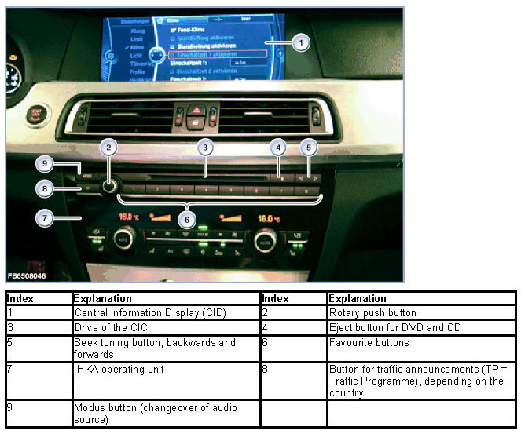
In principle, the structure of the CIC corresponds to that of a personal computer. In a similar way to a PC, the CIC contains:
- Processor
- Main memory
- Hard disk
- Fan
The extended range of functions means that the plug connections on the back of the Car Information Computer have also changed.
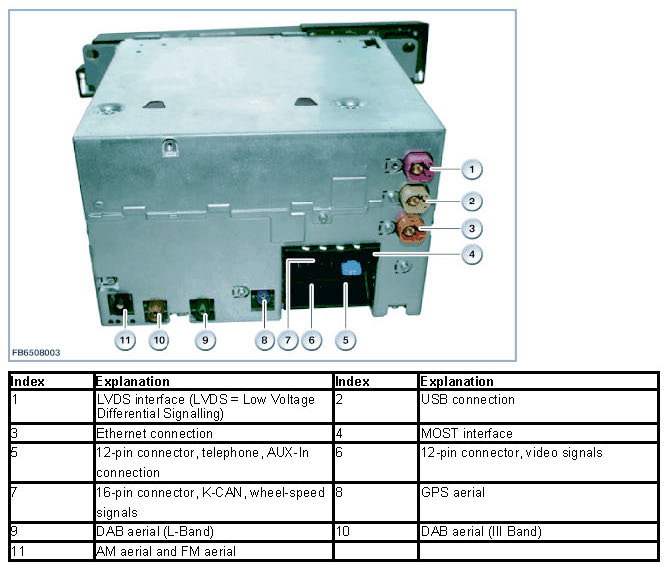
The following other components are integrated in the Car Information Computer (CIC):
- Navigation computer, HIP module as well as yaw sensor
The HIP module receives data from the GPS aerial such as: date, time display and locations of the GPS satellites. The navigation system uses the data from the HIP module to calculate the vehicle position.
The yaw sensor delivers the data regarding a change in driving direction. This data is required for a more accurate location determination, as satellite signals cannot be received everywhere (e.g. tunnels, underground vehicle parks).
- Three-way tuner: FM, AM and TMC
- DAB tuner
- Audio system controller
- Gateway between MOST and CAN
The operating unit for M-ASK-AUD with the 'favorites' buttons is not connected directly to the CIC. The operating facility is integrated in the control panel for the IHKA. The electrical connection is by means of a ribbon cable leading to the IHKA control unit. The IHKA sends the signals in messages on the K-CAN.
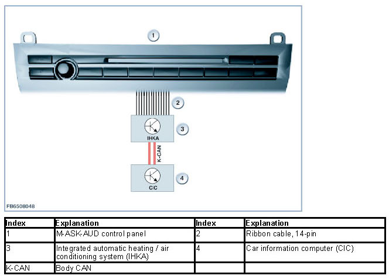
Central Information Display with LVDS interface
The Central Information Display (CID) measures 10.2 inches. The resolution is 1280 x 480 pixels. This increases the contrast and improves legibility.
The display and operating concept for control centre has changed. Selection of the main menus is arranged in linear form in lists (no longer star-shaped). The submenus are also placed horizontally one above the other.
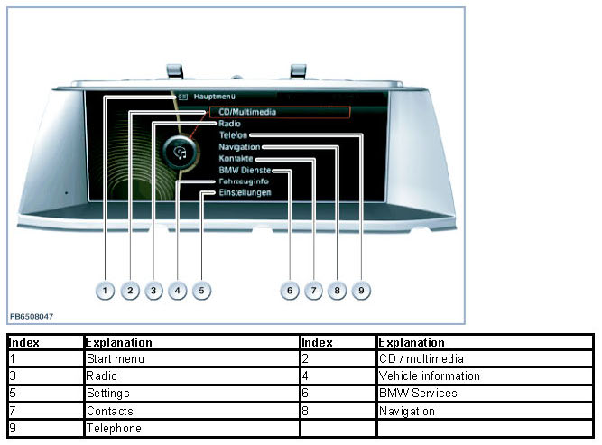
With introduction of the Car Information Computer, the LVDS data line is a two-wire connection. This new LVDS data line has the following advantages:
- Higher data transfer rate
- No difference in the signal runtime between the individual lines
- Simpler and lower-cost technology
A four-wire, screened cable is used for the two-wire connection. This solution involves lower costs, even though one of the 4 lines is not used actively.
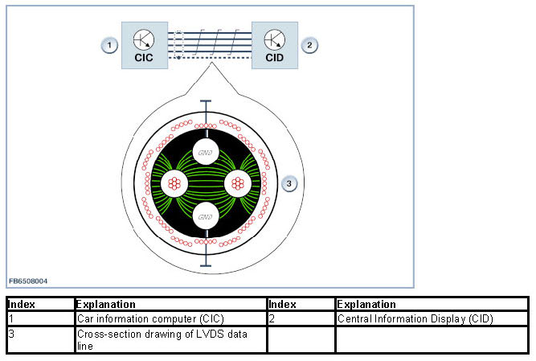
To prevent EMC interference, the unused line is also earthed. The capacitive interferences of the signals are diverted to ground. Furthermore, earthed lines form a defined potential and cannot have the same effect as aerials.
NOTICE: Orange-colored display in the event of a fault
Troubleshooting is made easier by a separate display.
With the following faults, the display turns orange:
- Defective picture signal from the head unit
- Interrupted LVDS data line
- Defective plug connection
Controller
There are 7 fixed selector keys arranged around the new controller. These selector keys now enable selection of half of all the submenus.
The following submenus can still be selected only from the main menu:
- Contacts
- BMW Services
- Vehicle information
- Settings
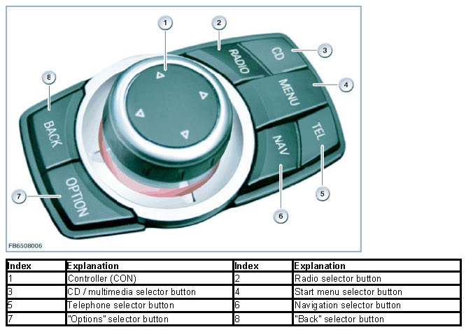
When pressed, the "Back" button returns the user to the last screen mask. The "Option" button enables other settings in the last selected submenu.
The selector keys are used now instead of pushing the controller for a longer period in a certain direction.
A small switch block is electrically connected at the controller. Depending on the options fitted, the switch block contains the controls for the Park Distance Control (PDC = parking aid) as well as for the bumper camera. The signals are placed by the controller (CON) on the K-CAN.
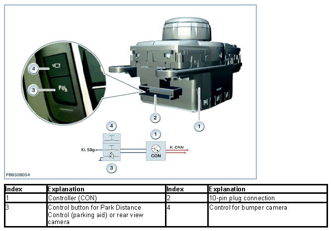
Rear compartment controller
In vehicles with rear seat entertainment system, a rear-compartment controller is connected on the K-CAN. The rear-compartment controller is identical to the front controller.
In the rear passenger compartment, there are 2 folding rear monitors, each with 800 x 480 pixel resolution as well as an infrared transmitter unit (SA6FG or SA6FH). The rear monitors are integrated in the backrests of the front seats. On both versions, the control unit (RSE) is integrated for the first time in the MOST bus. The Car Information Computer (CIC) serves as the master control unit for the MOST bus.
The rear monitors are also connected on the K-CAN.
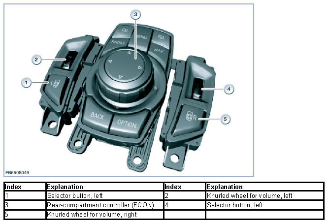
When pressed, the "Back" button returns the user to the last screen mask. The "Option" button enables other settings in the last selected submenu.
The selector keys are used now instead of pushing the controller for a longer period in a certain direction.
USB connection
There is a USB port in the glove box. The data of a USB stick (music files in the format MP3, WMA or AAC) can be imported via this USB port.
Imported USB music data is stored in a music collection. The file folders are stored with USB 1, USB 2 on the hard disk.
NOTICE: No import is possible via the USB audio interface.
An import via the USB audio interface (SA6FL, ULF-SBX-H or Combox) in the centre console is not possible. This interface is still only intended for playback of external audio sources.
If no Combox is installed, the USB audio interface is connected directly to the headunit.
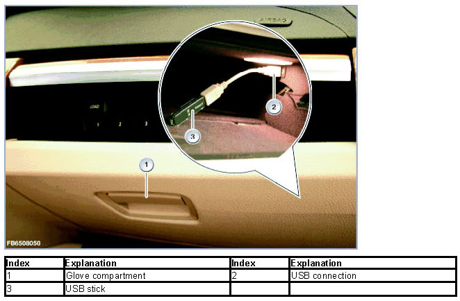
USB sticks with the standard USB 1.1 are supported. However, the standard USB 2.0 (= High-Speed) is recommended.
If the USB stick has been partitioned, the files must be located on the first partition. This is the only way these files are recognized and used. The USB port supplies the USB stick with a maximum of 500 mA.
USB hard disks, USB hubs and USB memory card readers with a number of bays cannot be read at the USB interface.
System functions
The following system functions are described:
- Car Information Computer composite system
- Additional functions on the Car Information Computer
- Personalization of settings
Car Information Computer composite system
The following illustration shows the system network for the Car Information Computer (CIC).
The CIC is supplied with voltage by terminal 30F. In the Japanese version, the aerials for VICS (Vehicle Information Communications System) and ETC (Electronic Toll Collect) are also connected to the CIC.
With the optional equipment of navigation,the GPS aerial is connected to the CIC. On vehicles without telephone, the microphone (speech processing) is also connected to the CIC.
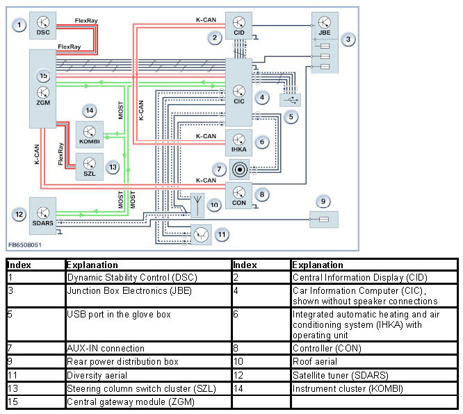
NOTICE: Special feature of programming
The diagnostic socket is connected to the CIC via Ethernet (5 lines). The central gateway module (ZGM) is located in between. The CIC is programmed via Ethernet.
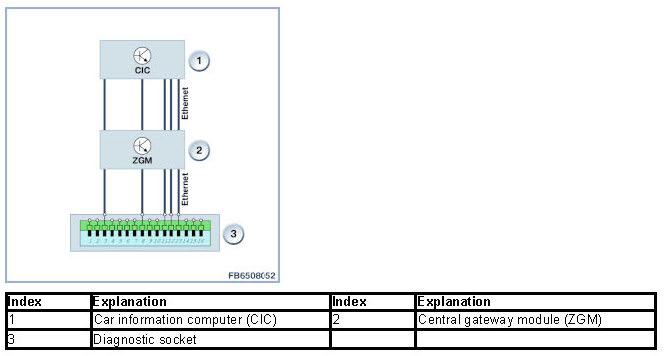
There is no longer a MOST port.
Additional functions on the Car Information Computer
NOTICE: Follow the instructions in the operating instructions.
The new functions provided by the CIC are described in detail in the Owner's Handbook.
To provide an overview, the new functions are summarized briefly.
- DVD drive functions
The Car Information Computer is equipped with a DVD drive (ROM). The drive enables playback of the following media:
- Audio CD (CD Digital Audio)
- Audio CD with files in the format MP3, WMA or AAC
- Audio DVD (only stereo track if on the data medium)
- Audio DVD with files in the format MP3, WMA or AAC
- Video DVDs
In comparison with the CCC, the drive is no longer used for navigation. Possibly only for a software update of the map data. That means that the drive is available to play audio and video sources.
- Hard disk functions
For the first time, a hard disk for storage of application software and as data memory is deployed in the headunit of a BMW vehicle. This enables the implementation of complex graphics: e.g. 3D altitude models for navigation.
Furthermore, a database with music tracks has been implemented (music collection). This provides the possibility to convert, save and play music tracks of the customer. Three languages are stored on the hard disk for the voice processing system.
As functional enhancement, the approx. 80 GB of the hard disk are divided into the following functions:
- Navigation system (simplified navigation system with CIC basic version)
- Music collection (not with basic version of the CIC)
- Database audio mode (music search with Grace note)
- System administration
- Voice processing
- integrated Owner's Handbook
Personalization of settings
For BMW vehicles, the personalization of functions is known as a Personal Profile. Here, individual settings are stored in the vehicle on a key-dependent basis. The settings are called up again on unlocking the vehicle.
With application of the Car Information Computer (CIC) as of F01, Mobile Profile is possible.
Definition of Mobile Profile: Importing the Personal Profile into another vehicle.
With mobile profile the personal profile of the user can be transmitted via the following interfaces:
- External USB memory
- Online via the BMW Portal
Subsequently, the Personal Profile can be imported into another BMW vehicle.
The Car Access System (CAS) is the master control unit for the personalization.
The following profile numbers are possible:
Profile number Definition
0 Profile 0
1 Profile 1
2 Profile 2
15 Guest profile
20 Invalid profile
A service function in the diagnosis system can be used to reset the settings of the Personal Profile.
Moreover, a service function can be used to read out and change the profile numbers in the CAS.
Notes for Service department
General notes
IMPORTANT: Watch out for electrostatic discharge.
When working on the CIC, particular attention must be paid to electrostatic discharge (ESD).
When working on electronic components of the CIC, comply with the following rules:
- The work must be performed on a conductive and earthed workbench. The additional special tool 12 7 192 is also used.
- The earthing cable is to be connected to a safe earthing point (water pipe, heating pipe, power socket earthing).
- First of all, the person doing the work puts on the wrist collar to achieve a discharge before taking parts out of the packaging.
- The electronic components are placed on the antistatic mat and also connected to the earthing cable.
NOTICE: Components that can be replaced.
On the Car Information Computer (CIC), fewer components can be replaced that on the Car Communication Computer (CCC).
The following components can be replaced:
- Complete CIC
- Complete operating unit for IHKA and audio
NOTICE: Note data backup option
The "Options" submenu provides the possibility to back up the complete music collection. Here, the data must be stored on a USB stick. Use a USB stick with a storage capacity of 8 GB. This function is already displayed in 03/2008, but is only enabled from 09/2008 onwards.
A data backup is only possible if the hard disk of the CIC has not been damaged and the interfaces to the CIC are still working perfectly. No recovery of music data has been agreed with the manufacturer of the CIC (Harman/Becker). This means that without a data backup the music files are irrevocably lost.
Diagnosis instructions
NOTICE: Observe the service function.
A service function in the diagnosis system can be used to reset the settings of the Personal Profile.
Path: Restore: Service functions - Body - Car information computer - Delivery status
Diagnosis is available on the diagnosis system for the following tasks:
- Complete CIC
- Navigation system
- Connected devices
- Voltage supply
- Quality check (audio test CD)
- Speakers
- Aerials
- MOST
- Video system
If "perceived symptoms" is selected, a fault pattern catalogue is available.
We can assume no liability for printing errors or inaccuracies in this document and reserve the right to introduce technical modifications at any time.